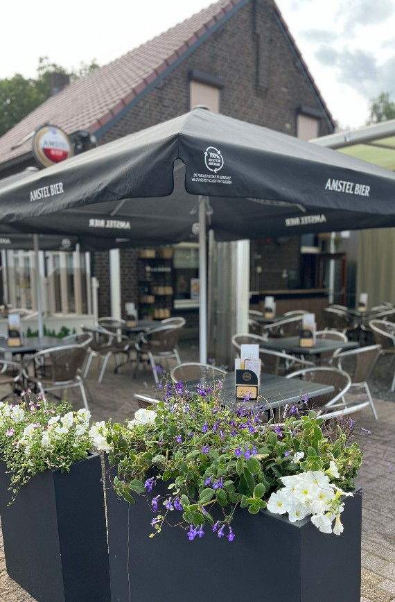
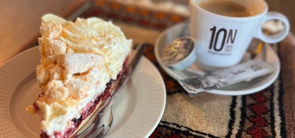
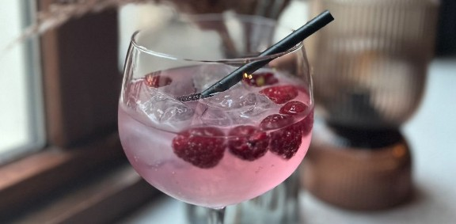
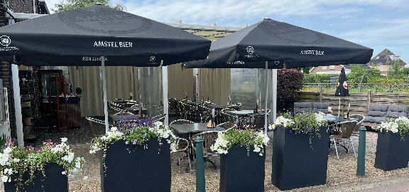

Bosstraat 100, Zjwame
Café de Bosrand
Een echt bruin café aan de rand van Swalmen. Een goed glas bier van de tap, koffie met Limburgse vlaai, een kleine kaart en een terras dat ook overdekt en verwarmd is.
Open op maandag, woensdag, vrijdag, zaterdag en zondag vanaf 10.00 uur
Al jaren een begrip in Swalmen
Kim Joosten is de uitbater van Café de Bosrand. Kim en haar team zorgen samen voor een goede service en een lekker glas bier.
Je vindt ons aan de buitenrand van Swalmen, vlak bij Roermond, richting de Duitse grens. Binnen ademt alles de sfeer van een typisch bruin café. Gewoon het adres voor een gezellige dag of een avondje uit.
- Bier van de tap Een goed glas bier en diverse speciaalbieren van de tap.
- Koffie met vlaai Koffie met gebak en Limburgse vlaai.
- Lunch en diner Een kleine lunch- en dinerkaart, ook voor de kleintjes.
- Borrel Bitterballen, nacho's of de borrelplank Bosrand.
- Darts Altijd in voor een partijtje darts.
- Wandelen en fietsen Een mooie stop op je wandel- of fietsroute.


Broodjes to go
Onze broodjes afhaalservice is er voor bedrijven, maar net zo goed voor de ‘gewone’ man, vrouw of het hele gezin. Ieder broodje wordt vers afgebakken bij de bestelling.
- Afhalen
- Iedere dag vanaf 10.00 uur, behalve dinsdag en donderdag
- Bestellen
- Graag vóór 11.30 uur doorgeven
Broodjes vers gebakken
- Gezond7,50
- Spek/ei7,50
- Tonijnsalade8,50
- Gehaktbal7,50
- Pulled chicken8,50
- Chicken strips9,50
- Carpaccio9,50
- Broodje kipfilet8,50
Tosti's
- Ham/kaas5,-
- Vlamtosti6,50
- Boerentosti6,-
Warme snacks
- Broodje frikandel4,50
- Broodje kroket4,50
- Crispy chicken burger pittig7,50
Wat er op elk broodje zit, lees je bij de broodjes op onze kaart.
Onze kaart
Van een kom soep tot het Limburgs zuurvlees, en voor de liefhebber een coupe of ijskoffie. Prijzen in euro's.
Lunch
Tosti
Voorgerechten worden geserveerd met brood en kruidenboter.
IJscoupes
IJskoffie

Buiten zitten, ook als het fris is
Ons terras is gezellig in de zon en blijft dat als het weer omslaat: een deel is overdekt en verwarmd. Een fijne plek na een wandeling of fietstocht in de omgeving.
Iets te vieren?
Voor feestjes en partijtjes ben je bij ons aan het goede adres. Denk aan een BBQ of een warm of koud buffet. Vertel ons wat je wilt, dan denken we graag met je mee.
Mail over je feestOpeningstijden
Broodjes en tosti's afhalen kan op alle open dagen vanaf 10.00 uur. Bestel graag vóór 11.30 uur.
| Maandag | 10.00 – 23.00 |
|---|---|
| Dinsdag | Gesloten |
| Woensdag | 10.00 – 23.00 |
| Donderdag | Gesloten |
| Vrijdag | 10.00 – 01.00 |
| Zaterdag | 10.00 – 01.00 |
| Zondag | 10.00 – 20.00 |
Kom langs in Zjwame
Café de BosrandBosstraat 100
6071 PZ Swalmen
- Telefoon0475-501597
- WhatsApp06-45255560
- E-mailinfo@cafebosrand.nl